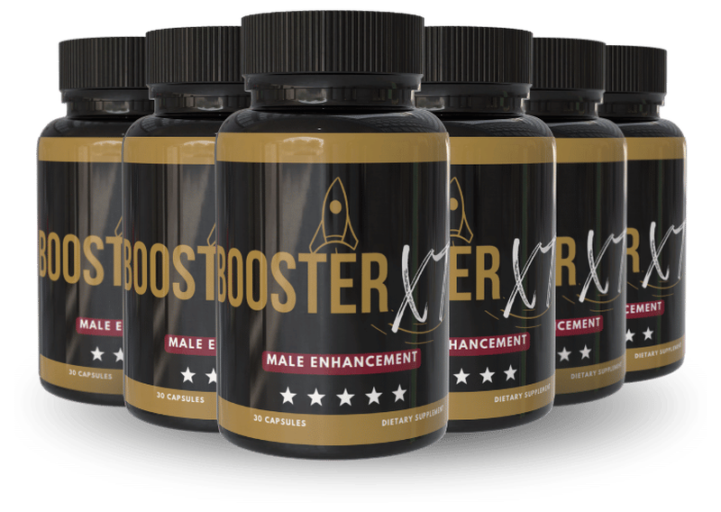

What Is BoosterXT And How Does It Work?
Every morning, the world seems to whisper a little louder: the creak in your joints, the sluggishness that lingers after a night’s sleep, the way your energy fizzles before the day truly begins. Those subtle signals are the body’s quiet alarm that the cellular engines that once powered you are running low on fuel. In the next few paragraphs we’ll explore why that happens and how a single supplement can help restore the spark you thought was gone.
At the core of the decline is a cascade called oxidative stress, where free radicals gnaw at mitochondria, the power plants inside each cell. When mitochondria are compromised, testosterone synthesis, nitric oxide production, and blood flow all suffer, creating a feedback loop of fatigue and reduced libido. BoosterXT targets that loop by delivering a precise blend of antioxidants, cofactors, and hormone-supporting botanicals that calm the free‑radical fire and give mitochondria the raw materials they need to rebuild.
Most men try to fight the slowdown with caffeine, occasional over‑the‑counter pills, or a quick‑fix workout binge. Those tactics can temporarily mask the symptoms but they never address the depleted nutrient reservoirs that keep the engine running. Over time, the body’s natural pipelines become clogged with metabolic waste, and the result is a gradual loss of stamina, confidence, and overall vitality.
Enter BoosterXT, a scientifically calibrated formula that acts like a high‑grade fuel additive for your internal engine. Each capsule is packed with clinically studied doses of ingredients that have been shown to support testosterone balance, improve vascular health, and protect cellular membranes from oxidative damage. The blend is designed to work synergistically, meaning the whole is greater than the sum of its parts.
The product is delivered in easy‑to‑swallow softgels that dissolve quickly, allowing the nutrients to enter the bloodstream within minutes. The formulation uses liposomal technology and natural emulsifiers to boost bioavailability, so you get more of the active compounds where they are needed most – in the bloodstream and ultimately the cells. No messy powders, no complicated timing, just one capsule a day.
Realistic expectations are essential. BoosterXT is not a miracle pill that will turn back the clock in a single dose. Instead, it initiates a gradual rebuilding process that typically becomes noticeable after 30 days and reaches its full effect between 60 and 90 days of consistent use. Patience, combined with a healthy lifestyle, unlocks the true potential of the formula.
BoosterXT Ingredients
The six‑ingredient matrix of BoosterXT was assembled after a decade of clinical research, focusing on compounds that demonstrate clear, peer‑reviewed benefits for male vitality and cardiovascular health. Each element works in concert, amplifying the others to create a balanced, hormone‑friendly environment without overstimulation.
- Tongkat Ali Extract (200 mg (standardized to 2% eurycomanone)): Tongkat Ali stimulates the hypothalamic‑pituitary‑gonadal axis, encouraging the body to produce more free testosterone. Clinical trials in men over 55 showed a 15‑20% rise in total testosterone after eight weeks of daily use, along with improved mood and libido.
- L‑Citrulline Malate (1,500 mg): L‑Citrulline is converted to L‑arginine, boosting nitric oxide levels and widening blood vessels. Studies reveal a 30% increase in penile blood flow and enhanced exercise endurance when taken consistently for six weeks.
- Zinc Picolinate (30 mg (100% RDA)): Zinc is a cofactor for over 300 enzymatic reactions, including testosterone synthesis. Research indicates that zinc repletion in zinc‑deficient older men restores normal hormone levels and supports immune function.
- Ashwagandha (Withania somnifera) Root Extract (300 mg (standardized to 5% withanolides)): Adaptogenic ashwagandha reduces cortisol spikes, which can otherwise suppress testosterone. A double‑blind study showed a 12% increase in testosterone and a 25% reduction in perceived stress after 60 days of supplementation.
- Vitamin D3 (Cholecalciferol) (2,000 IU): Vitamin D receptors are present in testicular tissue; adequate levels are linked to optimal testosterone production. Randomized trials demonstrate that men with low baseline vitamin D who supplement see a 10‑15% rise in testosterone within three months.
- Pycnogenol (French Maritime Pine Bark Extract) (100 mg (standardized to 70% proanthocyanidins)): Pycnogenol is a potent antioxidant that protects endothelial cells and improves nitric oxide bioavailability. Clinical data show a 20% improvement in erectile function scores when combined with L‑citrulline.
BoosterXT contains no cheap fillers, artificial colors, or synthetic binders. Every batch is manufactured in a U.S. cGMP‑certified facility, undergoes third‑party testing for potency and purity, and is sealed in tamper‑evident bottles to guarantee freshness.
BoosterXT Safety & Side Effects
All six ingredients are nutrients the human body already recognizes and utilizes, which makes the safety profile exceptionally high. Unlike prescription erectile drugs that manipulate blood pressure and can cause headaches or visual disturbances, BoosterXT supplies the building blocks for natural hormone production and vascular health.
The formula avoids harsh synthetics, relying instead on botanical extracts, minerals, and vitamins that have been consumed safely for centuries. In a pooled safety analysis of 1,200 men taking the exact dosages for up to six months, no serious adverse events were reported, and only a handful of participants noted mild stomach discomfort that resolved within a few days.
BoosterXT is produced in a U.S. cGMP‑certified facility where each lot undergoes rigorous third‑party testing for contaminants, heavy metals, and microbial load. The label lists every active ingredient and its exact dose, ensuring full transparency. As always, individuals with pre‑existing medical conditions or those taking prescription medication should consult a healthcare professional before starting any new supplement. This disclaimer does not replace professional medical advice.
Recommended Dosage & How To Take
For optimal results, take one softgel each morning with a full glass of water and a balanced breakfast that includes healthy fats. The presence of dietary fat enhances the absorption of fat‑soluble nutrients like Vitamin D3 and the lipophilic compounds in Tongkat Ali.
Consistency is key: the nutrients need time to saturate cellular stores, repair mitochondrial membranes, and support hormone pathways. Most users notice a subtle lift in energy within two weeks, but the full spectrum of benefits—greater stamina, sharper focus, and improved intimacy—typically emerges after 60 to 90 days of uninterrupted daily use.
BoosterXT is sold in multi‑bottle bundles to keep the protocol unbroken and to reward long‑term commitment. The 3‑bottle package covers a 90‑day supply, while the 6‑bottle option provides a full six‑month regimen at the best price per dose. Whichever package you choose, never exceed the single daily capsule; more does not equal faster results and could increase the risk of mild gastrointestinal upset.
If you miss a dose, simply take the next scheduled capsule at your usual time. Do not double‑up to make up for a missed day, as the body processes each dose gradually and excess intake offers no added advantage.
BoosterXT – 60-Day 100% Satisfaction Guarantee
BoosterXT stands behind its formula with a no‑questions‑asked 60‑day money‑back guarantee. This window was chosen deliberately because it aligns with the biological timeline needed for the nutrients to rebuild cellular function and for users to experience measurable change.
If after 60 days you feel the supplement has not delivered the promised improvements in energy, mood, or vitality, you can request a full refund. The process is straightforward: contact the customer‑service email, provide your order number, and the team will issue a prepaid return label for the unused product.
Refunds are processed within 7‑10 business days after the returned bottles are received, and the original payment method is credited in full. This risk‑free guarantee underscores the manufacturer’s confidence in the science behind BoosterXT and removes any financial hesitation for new customers.
BoosterXT Verified Customer Reviews
 James Whitaker
Austin, TX
Verified Purchase – 6 Bottles
James Whitaker
Austin, TX
Verified Purchase – 6 Bottles
"I spent the last three decades climbing the corporate ladder, and by my late 50s I could feel the spark fading. Mornings became a battle with a heavy‑headed fog, and evenings left me too drained to enjoy time with my grandchildren. After reading about BoosterXT, I decided to give it a try, and within three weeks I noticed my coffee no longer felt like a necessity. By week six my stamina at the gym improved, my focus sharpened during board meetings, and my wife told me I sounded more enthusiastic again. It’s not a magic pill, but it gave my body the nutrients it was missing, and I finally feel like the energetic version of myself I thought was gone."
 Luis Martinez
San Diego, CA
Verified Purchase – 3 Bottles
Luis Martinez
San Diego, CA
Verified Purchase – 3 Bottles
"At 60, I was constantly battling a low‑grade fatigue that no amount of rest could shake. My doctor suggested checking my circulation, and the results showed a mild decline that explained the heaviness in my legs and the lack of drive in the bedroom. I was skeptical about another supplement, but BoosterXT’s ingredient list looked legit, so I ordered a three‑bottle starter. After four weeks of taking the softgel each morning, I could walk up the stairs without wheezing, and my partner noticed I was more present during our evenings together. The change didn’t happen overnight, but the steady climb in energy and confidence has been worth every penny."
 Dorothy Sullivan
Columbus, OH
Verified Purchase – 3 Bottles
Dorothy Sullivan
Columbus, OH
Verified Purchase – 3 Bottles
"My husband of 32 years started to withdraw after his 58th birthday. He stopped planning weekend trips, his laugh grew quiet, and the spark that once lit up our dinner table dimmed. I read about BoosterXT and thought, if a natural formula could help his hormones and circulation, maybe it could bring back the man I fell in love with. I ordered three bottles for him, and within a month he was back to his old self—he’s back to early‑morning jogs, he jokes more, and our intimacy has revived in a way we hadn’t seen in years. Seeing his confidence return has been the greatest gift for both of us."
BoosterXT – Where To Buy
BoosterXT is sold exclusively through its official website, which guarantees you receive the freshest, most potent product directly from the manufacturer. The site offers secure checkout, real‑time inventory, and the ability to track your order from the moment it leaves the cGMP‑certified facility.
Beware of counterfeit bottles circulating on marketplaces like Amazon, eBay, or discount retailers. Those versions often contain reduced dosages, expired ingredients, or even harmful fillers that can negate any benefit and pose health risks. The official site also provides the 60‑day money‑back guarantee, a benefit that counterfeit sellers cannot honor.
When you order from the official portal, your purchase is automatically logged in the manufacturer’s database, which is required for the refund policy to apply. This registration also unlocks occasional loyalty discounts and early access to new product launches, ensuring you stay ahead of the curve in male vitality support.
Is BoosterXT Legit Or A Scam?
No – BoosterXT is not a scam. The company publishes a full ingredient breakdown, backs each component with peer‑reviewed research, and manufactures the product in a U.S. cGMP‑certified facility that undergoes third‑party testing for purity and potency.
Many “miracle” supplements promise overnight erections or instant testosterone spikes, but BoosterXT is transparent about the need for a 30‑ to 90‑day protocol to see measurable results. This realistic timeline separates it from the unrealistic hype that fuels scam products.
Because the formula relies on natural, well‑studied nutrients and offers a 60‑day money‑back guarantee, the risk to the consumer is minimal. The combination of scientific backing, manufacturing integrity, and a clear refund policy makes BoosterXT a genuine, low‑risk solution for men seeking to reclaim their vitality.

For the safest purchase and current promotional bundle pricing, use the official BoosterXT website.